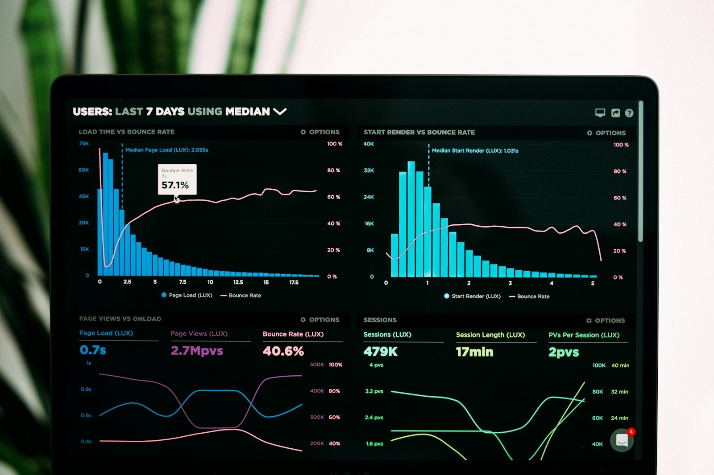

Foresprint is project estimation software for IT and software services firms, with planning and forecasting built in. Its agents estimate the team, timeline, budget and risks from the firm's own past projects, turn that into a full project plan and forecast the finish whenever it is asked. Proposals go out faster, at a price the firm can defend.
More deals are fixed price or tied to outcomes, and clients expect AI savings to show up in the price from day one. A project's margin is largely set the day it is signed, and the firm that comes back first with a clear, credible proposal often wins the deal.
It is built in a spreadsheet under deadline, from memory. The firm's real evidence, how its past projects actually ran, sits scattered across old files and tools nobody has time to go through.
A team, a timeline and a price have to be pieced together by hand before anything goes to the client. Meanwhile a faster firm has already replied.
The plan is built task by task after the deal is won. Overruns surface months later, when they can only be explained, not fixed.
Foresprint puts the firm's own project history to work across the whole life of a project. Its agents find the past projects closest to a new one and estimate from how those projects really went, with the source shown behind every number. The estimate becomes the plan, and the plan is forecast against live data whenever someone asks. People review, change and approve every step.
The project is described once. Similar past projects are found, the estimate is built and reviewed, the full plan is generated from it, and the finish is forecast whenever it is needed.
The firm that replies first with a credible number often wins. Foresprint gives pre-sales a ready estimate built from the past projects closest to the new one, with the match shown behind every number. The team spends its time checking and adjusting, not piecing a price together, and the person signing off can see where each figure came from.
Days spent pulling a team, a timeline and a price together from memory. Hard to explain and hard to repeat.
Starts from a ready estimate based on the closest past projects. The same method for every proposal, with the source shown.
When several proposals are due in the same week, each one still needs a team, a timeline and a price. Foresprint gives every proposal a ready estimate from the closest past projects, so pre-sales closes proposals faster at a price it can defend. Risks are listed before the number is agreed.
Once the deal is won, the delivery team does not start over. The approved estimate turns straight into a full task and milestone plan, built on how similar projects really ran. When the start date moves, the whole plan moves with it.

A signed project rarely runs exactly to plan. Whenever a forecast is asked for, on a new project or one already running, Foresprint checks the latest data against how similar projects finished. Cost overruns, rising risks and underused people show up while there is still time to act.
Deals slip and kick-offs move. In Foresprint, changing the start date moves every task and milestone in the plan, so delivery keeps a plan it can trust instead of rebuilding one.
Foresprint does not wait for a status report. When a forecast is asked for, it checks live data from the tools already in use against how similar past projects finished.
The answer shows where the project stands that day: the estimate at completion, where cost is heading over budget, which risks are rising and where people are over or under used. Leaders see the finish early, while there is still time to change it.
Foresprint does not replace project tools or the people running them. Project tools keep running tasks, updates and day-to-day tracking. Foresprint reads from them to estimate, plan and forecast, and people approve every step. Nothing gets replaced and nothing gets migrated.
Reads project history and live data · People approve every estimate and plan
Alongside the plan, Foresprint shows actuals against the baseline, the forecast estimate at completion, cost overrun and risk alerts, and resource utilization insights with suggestions on where to rebalance the team.
Most estimation tools work from generic formulas. The inputs are fixed, the model is fixed, and the result has little to do with how your own teams actually deliver.
Estimates come from your own delivery history. Which project details are compared, which risks are tracked, how the plan is laid out and what the forecast shows are all set to how your firm works. When the way you deliver changes, the configuration changes with it.
Project estimation software works out the team, timeline, budget and risks a project will need before it starts. Foresprint is an agentic project estimation, planning and forecasting solution built on the AIQoD platform. Its agents build each estimate from the past projects closest to the new one, and people review and approve every estimate.
No. Foresprint does not run or manage projects, and it does not replace the people who do. It estimates, plans and forecasts, for new projects and for projects already running. Your project management tools keep doing the day-to-day tracking.
Pre-sales starts from a ready estimate instead of a blank sheet. The team, timeline, budget and risks are proposed from the closest past projects, so the proposal team checks and adjusts rather than building the number by hand.
From your own project history. Foresprint searches past projects for the closest matches and shows each match with a percentage. The proposed team, risks, timeline and budget are each shown next to the past project they came from.
Yes. Pre-sales and bid teams use it to estimate proposals from real delivery history, with risks listed before the price is fixed and a clear source behind every number in the quote.
Yes. It works with the systems you already use and reads project data from them. Tasks, updates and tracking stay where they are. Nothing is replaced or migrated.
Forecasts are on demand. When a forecast is requested, Foresprint checks live data from your project tools against how similar past projects finished. It returns the estimate at completion, cost overrun and risk alerts, and resource utilization suggestions.
Yes. Every forecast includes the estimate at completion, based on current progress and how similar past projects performed.
The reviewed estimate turns straight into a full task and milestone plan. When the start date changes, every task and milestone date moves with it, so the plan does not need to be rebuilt.
Yes. It works for new projects and existing ones. For a running project it compares actuals with the baseline and forecasts the finish.
Yes. The proposed team, risk register, timeline and budget can all be edited before the plan is built. People make every final call.
Yes. Each forecast flags where cost is heading over budget and which risks are rising, along with suggestions on where people are over or under used.
The first configuration goes live in a day, with measurable results typically inside three to six weeks.
Bring a project you are pricing now. In twenty minutes, see Foresprint find similar past projects, build the estimate and turn it into a full plan.